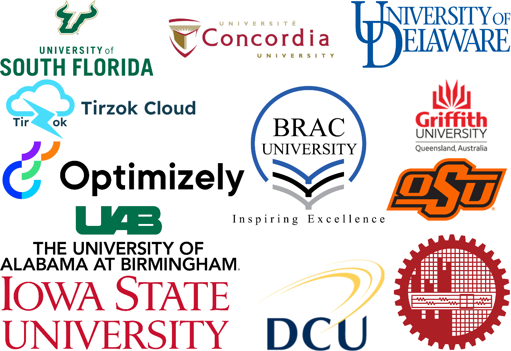

Hello, I'm Joy!
I'm Joy — a researcher from Dhaka, Bangladesh with an M.S. in Computer Science from the University of Delaware.
I design AI systems at the intersection of social good, healthcare, and computer vision — with a core commitment to making machine learning practical, accessible, and impactful in real-world settings. My work spans medical image segmentation, air quality sensing, and assistive technology, grounded in deep learning architectures, convolutional and attention-based models, and efficient training strategies. I have developed methods such as: BAMPolyp (ICCVW '25), a Bi-Axial Mamba bottleneck architecture for gastrointestinal polyp segmentation; AQI-Net (Nature Sci. Rep. '23), a smartphone-based deep learning approach for location-specific air quality index estimation; and InvoConvNet (EAAI '24), an involution-fused convolutional network for classifying eye-tracking patterns in children with Autism Spectrum Disorder.
My current focus is on Reliable AI in Healthcare — specifically small and vision-language models (SLMs and SVLMs) adapted for low-resource clinical settings, mitigating hallucination in medical LLMs, leveraging multilingual models for non-English clinical texts, and improving the transparency of AI in clinical decision-making.
My Erdős number is 4.
Outside research: avid gamer (LePotatoGuy), anime enthusiast, cyclist, and a chess player rated ~400 — which means I lose often and confidently. Feel free to challenge me anyway.
News
- Dec 2025 DegreeCompleted M.S. in Computer Science from the University of Delaware!
- Nov 2025 ReviewInvited as reviewer at PeerJ Journal.
- Aug 2025 Op-EdOp-Ed published in The Daily Star on responsible AI use in education. [Link]
- Jul 2025 PaperBAMPolyp (Mamba-based polyp segmentation) accepted at CVAMD @ ICCV 2025.
- May 2025 PaperTwo-step copyright-aware image generation model accepted at IFIP Summer School on Privacy and Identity Management.
- May 2025 AwardAwarded Quality Journal Publication Award from BRAC University.
- Apr 2025 PaperGCN+Transformer model for CB2 receptor ligand activity prediction accepted at IJCNN. [Link]
- Mar 2025 ReviewInvited as reviewer at NeurIPS 2025.
- Jan 2025 PaperAdversarial attacks paper (ET DeepFool) accepted at Nature Scientific Reports.
- Dec 2024 FellowshipSelected for NSF-funded NRT-MIDAS fellowship program.
- Oct 2024 PaperInvolution Fused ConvNet for ASD eye-tracking classification accepted at EAAI.
- Aug 2024 EnrollmentStarted graduate studies at the University of Delaware.
- Feb 2023 Op-EdOp-Ed published in The Daily Star on ChatGPT in education. [Link]
Selected Publications
Honors & Awards
Reviewer Work
- Reviewer, NeurIPS 2025
- Reviewer, ICLR 2025 (13th)
- Reviewer, ACM CSCW 2024
- Judge, Undergraduate Research Expo, University of Alabama at Birmingham (Fall 2023)
- Reviewer, 1st WACV 2024 Workshop on Vision-Based Understanding for Low-Resource Languages (WVLL)
- Reviewer, ACM CHI 2024
- Reviewer, ICLR 2024 (12th)
- Reviewer, NeurIPS 2023
- Reviewer, NeurIPS 2024 Workshop on Foundation Model Interventions (MINT 2024)
- Reviewer, ACM Journal on Computing and Sustainable Societies
- Reviewer, PeerJ Journal
Skills
Education
Experience
Courses: CSE472 (HCI), CSE474 (Simulation & Modeling), CSE484 (Cloud Computing)
Course: CSE474 — Simulation and Modeling
Collaborations
I am immensely honored to collaborate with researchers from diverse institutions across the globe.

Lineage
I am honored to be part of a distinguished academic lineage connecting to figures such as Isaac Newton, De Morgan, Thomson, and Rutherford.